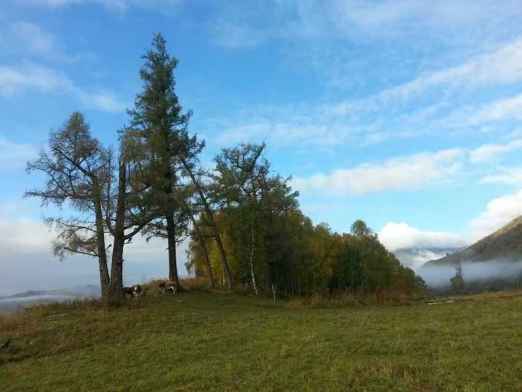

Photography and Inspiration
自然光影的記錄者
Portfolio
作品展示
Inspiration
靈感集
About
關於我
My Photography
我的攝影作品
全部
光影藝術
創意構圖
情感表達
光與影
探索光影的無限可能
視覺語言
構建獨特的畫面結構
情感瞬間
捕捉內心的真實感受

光影交織
展現光影的韻律之美
空間構成
探索空間的視覺表達
情緒肖像
記錄情感的微妙變化
光影韻律
感受光影的節奏之美
視覺敘事
用畫面講述故事
情感共鳴
觸動心靈的瞬間
光影意境
營造獨特的氛圍
視覺探索
發現新的視角
精彩瞬間
環球之旅
奇妙冒險